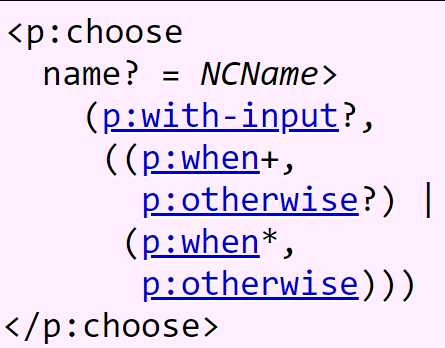
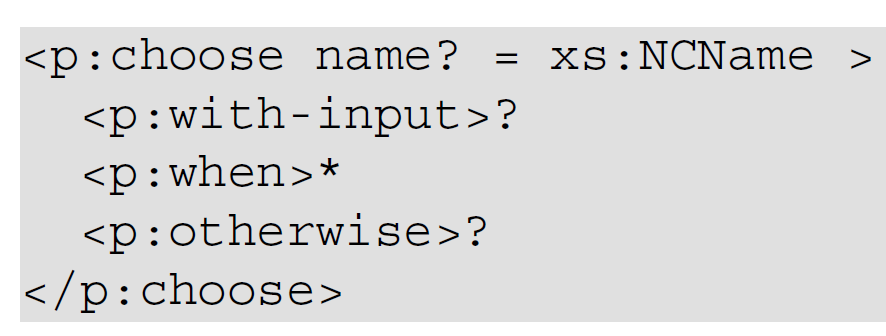
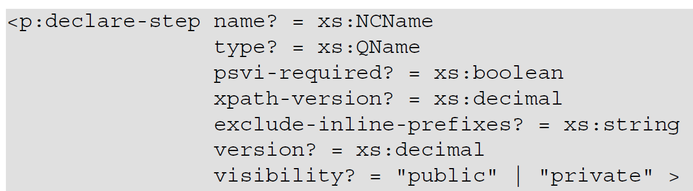

So, OK, The idea that you have to write some documentation has landed and you set yourself to this inevitable task. Where to begin? Let's see if we can prepare some guidelines.
If you're smart, you realize upfront that maybe, one day, you'll have to write documentation of some sort for the structure you're working on. And that means trying try to keep its complexity in check. Especially child constructions with lots of complicated nested choices, sequences, etc. are very hard to explain in a satisfactory way. KISS rules.
Please realize you're in a knowledge bubble. You know everything there is to know about the XML structure. Maybe you consider it trivial. But your reader does not. So, first and foremost, try to put yourself in the user's mind. What does he or she need to know to use things effectively? What is important and what are details? What does the reader not know?
To reach such a state of mind, the easiest you can do is step away from your project for a day or longer. Take it over the weekend, distract yourself a little. And then plunge in.
Once you've, at least partially, left your knowledge bubble, try to get into the one of the reader. Who is he or she? What background knowledge can we expect? What is your audience?
Since we're talking here about documenting XML structures, I think its safe to assume you're writing for a technical, knowledgeable audience. So don't overdo it and ramble about the syntax and semantics of XML in general, or what a schema is, a web-server or other generic concepts. Best to assume this is common knowledge. Writing about it will only annoy your audience and make them feel belittled.
An often made mistake is to start explaining something without establishing what is for. So you happily set out describing your structure's root element and all its attributes, but forget to tell the reader why he/she should bother anyway. Why is this XML structure there? What does it do in general? Where in the processing is it used?
So it's important to start with some narrative. A few paragraphs that explain background, goal, usage and the likes in broad terms. Maybe even some diagram or flowchart?
Another thing I always like to see before plunging into the details is some example (or more than one) of the structure we're talking about. What does it look like? How much of it do I already roughly understand? What's the style? It's like a starter when dining out or the trailer of a film.
But watch out: deciding on a good example is not easy at all. It must be more than trivial but not overly complicated. It should not bury the reader in frightening details. It should be geared towards some common use-case, one that many readers will recognize and understand and that is not too hard to explain. It must be illustrative.
Before you start explaining the nitty-gritty details of the XML structure, decide on a format. It's not only irritating for the reader to find this element explained this way and another one very different, it will also make your writer's task miserable. This is analogues to programming without conventions. Just try to imagine how tiring it would be to have to come up with some original naming format every time you create a variable, function or class. Much easier to decide on something and stick to it.
Of course this leads to the question: what is a good, or at least sufficient, format? More about this later.
Since we're all XML-heads here, I don't think I have to explain the difference between markup and its presentation. So when you're documenting some non-trivial structure, invest time in setting up a tool-chain in which you can describe structures in a formal way that is subsequently converted into the nice diagrams and tables you want to show your readers. Don't create them by hand.
This is very important for maintenance reasons. Assume for instance you've decide to make extensive and beautiful tree diagrams of your XML structures using some manual drawing tool. The result is awesome and the likes start streaming in. But XML structures, like all software, tend to change over time. So you have to redo some of the drawings, which is a lot of work even for small changes. Nah, not now… The documentation starts lagging behind and probably dies in beauty one day.
As strange as it may sound, when things get complicated, don't let slavishly following the format get in the way of being understandable. There are situations where your diagrams or formal descriptions will become hard to read and slight deviations from the format you've decided on will improve understandability. Two examples:
The XProc programming language has a <p:choose> instruction. The (new 3.0) standard depicts it like
this:
Figure 7. The <p:choose> in the standard
|  |
Look at the construction for the child elements <p:when> and <p:otherwise>. It explains,
formal and correct, that there must be at least a <p:when> or a <p:otherwise>. Let there be no
doubt: standard's documents must be formal and correct, so here it's no problem. But what if you're documenting
this? This whole construction with its parenthesis, +, ? and | marks is not really easy to understand for humans. It looks daunting,
even while its meaning is quite simple.
So when I was writing the section about <p:choose> for the XProc book, I decided to do it a little
different:
Figure 8. The <p:choose> in the XProc book
|  |
Somewhat further down followed by the remark:
A <p:choose> must contain at least one <p:when> or a
<p:otherwise>. In other words: a <p:choose> without at least a single branch is not
allowed.
So a simplified diagram, followed by some additional text explaining the border condition. Not formal, not technically exactly correct, but easier and quicker to understand.
These kinds of decisions are also driven by the importance of what you're trying to tell. That a
<p:choose> has <p:when> and <p:otherwise> children, yes, that's important.
That there's a formal condition on there being at least one… duh. Who will ever want to write a <p:choose> without
one? You loose a little exactness but you gain a lot of understandability.
Sometimes possible attribute values are a list of discrete values, like for the visibility attribute in following
example.
Figure 9. An attribute with a discrete value list
|  |
That's OK when this list is small, but what if it becomes longer and overflows the line width? Since you've decided on a format where discrete value lists are part of the diagram, you might be tempted to put them all there. However, that would mess up the layout of the diagram and would forfeit its purpose: a quick, single glance, overview of an element's structure.
A better solution here would be to list just a few values in the diagram, add an ellipsis (…) to signify this list is incomplete and list them (in a table) later on in the document.